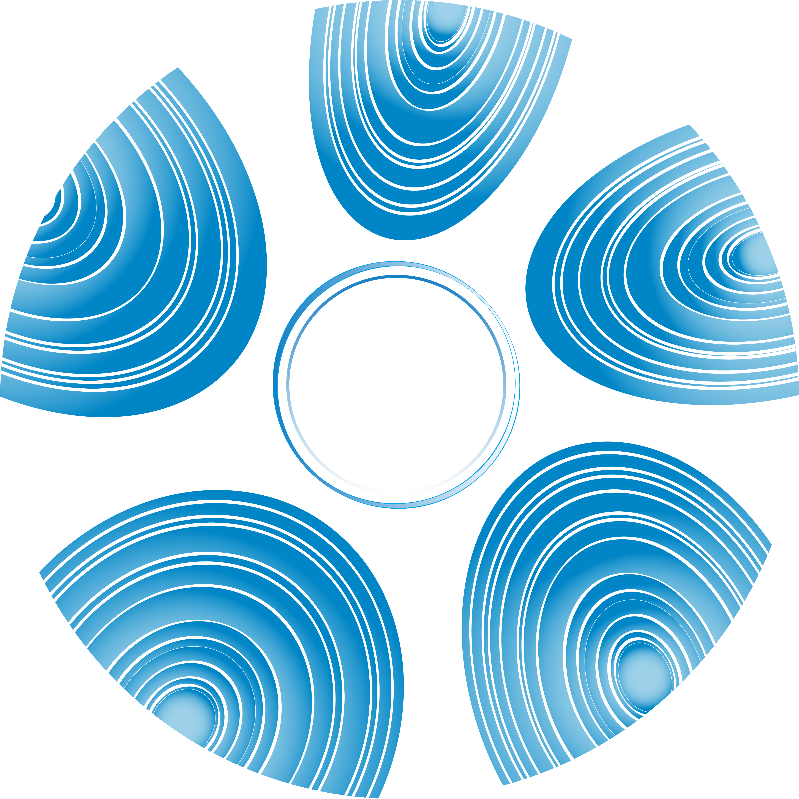

我預設這是一個三十分鐘的練習，幫助你暫時性放下心中的焦慮，讓自己稍微變出一點勇氣來面對生活的方法。如果你需要更長的時間，也尊重自己的狀態，不要勉強自己唷～
請按照接下來的引導，一步一步完成。我留了一些空白，是為了不要讓你快速閱讀到下面的字句。所以不要偷看哦！
（寫得越完整越好）
如果你真的有認真且把腦袋的問題全部完整寫下來，那你應該會進入一個腦袋空白的階段。
這個過程你可以去做一些很日常的事情：吃零食、喝飲料、耍廢、發呆、洗碗、忙一下自己手邊的事情、回個簡易的短訊⋯⋯
這時候再回過頭來，去看剛剛第一步你寫了什麼。
你應該有一點想法了對吧～那這時候也不要馬上去做和去執行。
去感覺一下你剛才跳出來的想法和感受。
如果是很正面的，那就繼續保持；
如果是往負面方向，也不要害怕。
我的文字正在引導著你～
正面的可以稍微思考一下情境是否可以落實，可以就試試看，不行就退，讓自己保持彈性；
負面的話，請跟著我的文字進行操作，請繼續往下閱讀。（正面如果想要繼續深入也可以往下）
你現在負面的感覺，跟隨著他的感覺走。如果那個感覺是很悲傷 / 生氣 / 沮喪 / 快樂，跟著他走。
嘗試去傾聽他在說什麼，他正準備告訴你一些秘密（你本來就知道的秘密）。
請確實傾聽他想要表達的秘密之後，
再繼續往下，不要偷跑唷！
請確實寫下來。如果有很多想法那就繼續寫，如果沒有或完全沒想法也很好，尊重這種感受。
（如果你的答案是不知道，那就先停留在這裡就好了。讓自己浸泡在感受裡面，等到你覺得夠了，請
跳到第 13 步 →）
你寫了非常多想法之後，請幫自己總結成一個你覺得適合的想法或概念。通常會出現在你的最後一個段落。
重新看看你的想法，再重新看看你的第一個步驟寫下的困難。
你是否有一些新的觀點了呢？
也許現在做不到或沒想法，也沒有關係。
不用勉強自己一定要做到，大多數時候，我是鼓勵另闢蹊徑的。
這時候請你告訴自己：
你現在不相信也沒有關係，這完全不重要。
重要的是你做了這件事情。
現在請幫我做一件事情，跟自己說一聲：